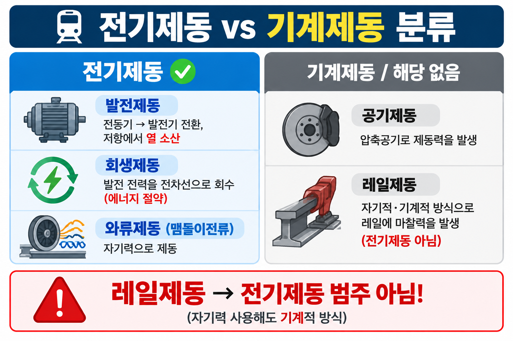
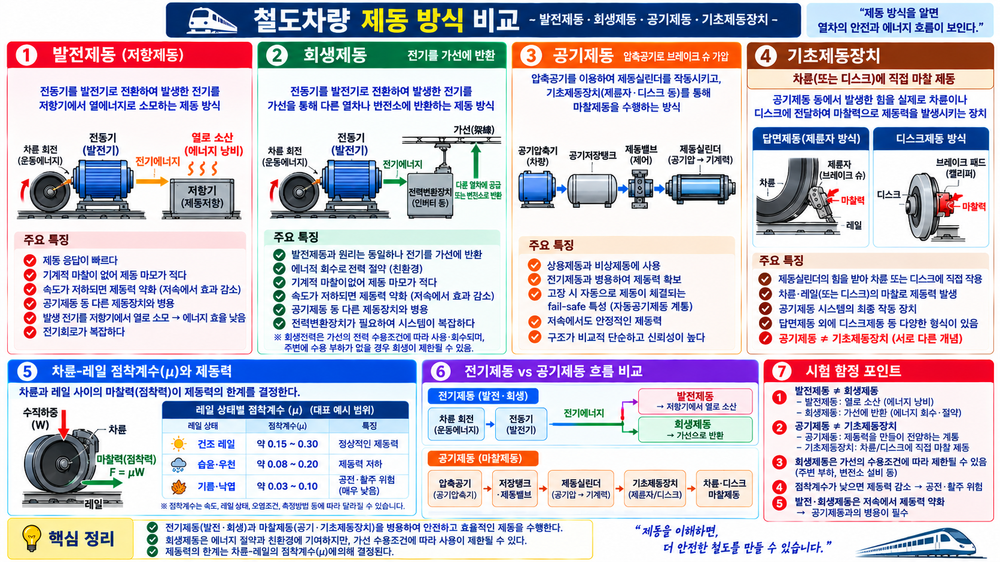

§1 제동 방식 분류 (SOURCE: 4.html 개념50)
4.html 개념50 (p8-36)
제동 세부 비교 — 발전·회생·공기·기초제동
★★★
| 종류 | 원리 | 특징 |
|---|
발전제동
(저항제동) | 전동기를 발전기로 전환 → 전기를 열로 소산 | 에너지 낭비, 저항기로 열 방출 |
| 회생제동 | 발전제동 + 전기를 가선(架線)에 반환 | 에너지 회수·절약 (친환경) |
| 공기제동 | 압축공기로 브레이크 슈 가압 | 비상제동·보완용, 고장 시 자동 체결 (Fail-safe) |
| 기초제동장치 | 차륜 직접 제동 (제륜자) | 차륜·레일 마찰로 제동력 발생 |
| 수용제동 | 공기나 유압·마찰력으로 바퀴를 직접 제동 | 기계적 제동장치 — 전기제동과 구분 |
⚠️ 핵심 함정: 발전제동 ≠ 회생제동
발전제동 = 전기를 열로 소산 (에너지 낭비)
회생제동 = 전기를 가선에 반환 (에너지 절약)
이론 배경: 전기철도의 제동은 전기적 제동(발전·회생)과 기계적 제동(공기·마찰)을 병용합니다. 회생제동은 발전된 전기를 가선을 통해 다른 열차에 공급하거나 변전소에 반환합니다. 공기제동은 Fail-safe 원칙 — 고장 시 자동으로 체결되어 안전을 보장합니다.
§2 발전제동 상세 특성 (SOURCE: 4.html 개념50 · 철도왕 교재)
4.html 개념50
발전제동(저항제동) 6가지 특성
| 특성 | 내용 |
|---|
| ① 제동 응답 | 응답이 빠르다 |
| ② 제동 마모 | 마모가 적다 (기계 마찰 없음) |
| ③ 저속에서 | 속도 저하 시 제동력 약화 |
| ④ 병용 | 공기제동 등 다른 제동장치와 병용 |
| ⑤ 에너지 효율 | 전기를 저항기에서 열로 소모 → 효율 낮음 |
| ⑥ 전기회로 | 전기회로가 복잡 |
§3 전기저항제동 3종 (SOURCE: 4.html 개념88 → 상세는 12-05)
4.html 개념88
전기저항제동 3종 목록
| 전기저항제동 3종 | 분류 |
|---|
| 회생제동 | 전기저항제동 ✅ |
| 발전제동 (저항제동) | 전기저항제동 ✅ |
| 와류제동 | 전기저항제동 ✅ — 비접촉 전자기 제동 |
| 공기제동 | 기계적 제동 ❌ (전기저항제동 아님) |
🔗 와류제동 원리·특성 상세: → 12-05 와류제동 참조

전기제동(회생·발전)과 기계제동 특성 비교

발전제동·회생제동·공기제동·기초제동 방식 특성 비교
§4 기출문제
Q1
rk_ch83_33 · SOURCE: 4.html 개념50 · 기계적 제동
기계적 제동장치로 맞는 것은?
- 와전류제동
- 수용제동
- 전자제동
- 회생제동
✅ 정답: ② 수용제동
해설: 기계적 제동장치 = 공기나 유압·마찰력으로 바퀴를 직접 제동. 수용제동이 해당.
회생·발전제동은 전동기를 발전기로 이용하는 전기제동. 와전류제동은 자기장·와전류를 이용한 비접촉 전자기 제동 (전동기 불필요).
Q2
rk_ch83_34 · SOURCE: 4.html 개념50 · 제동방식 아닌 것
열차 제동방식이 아닌 것은?
- 발전제동
- 자연제동
- 수용제동
- 회생제동
✅ 정답: ② 자연제동
해설: 열차 제동 방식: 공기제동·발전제동·회생제동·수용제동 등.
"자연제동"은 정식 제동 방식이 아니다. (오답 함정)
Q3
SOURCE: 4.html 개념50 · 발전·회생제동 구분
전동기를 발전기로 활용해 제동하되 발생 전기를 가선에 반환하는 제동 방식은?
- 발전제동
- 회생제동
- 공기제동
- 수용제동
✅ 정답: ② 회생제동
해설: 회생제동 = 발전제동 + 전기를 가선에 반환(에너지 절약).
⚠️ 오답: 발전제동은 열로 소산 (가선 반환 ❌)